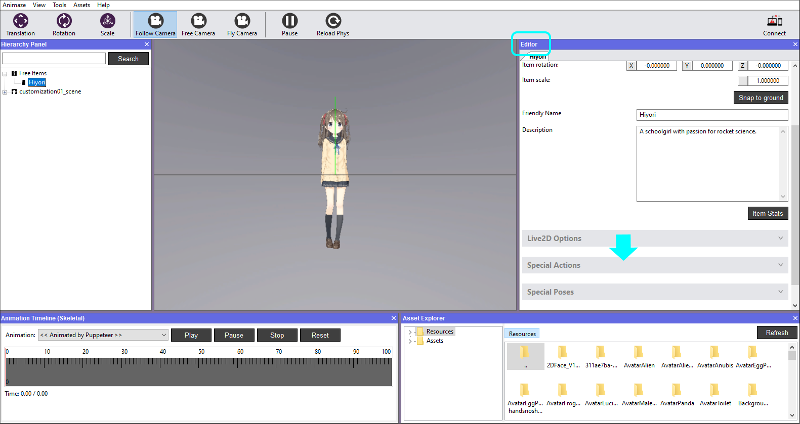
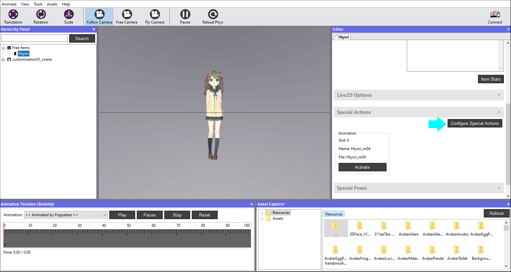
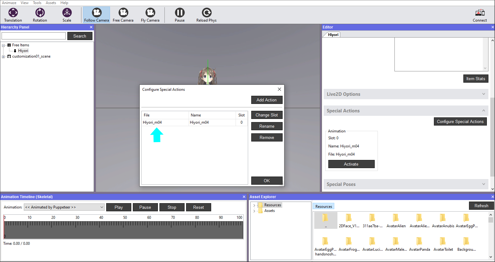
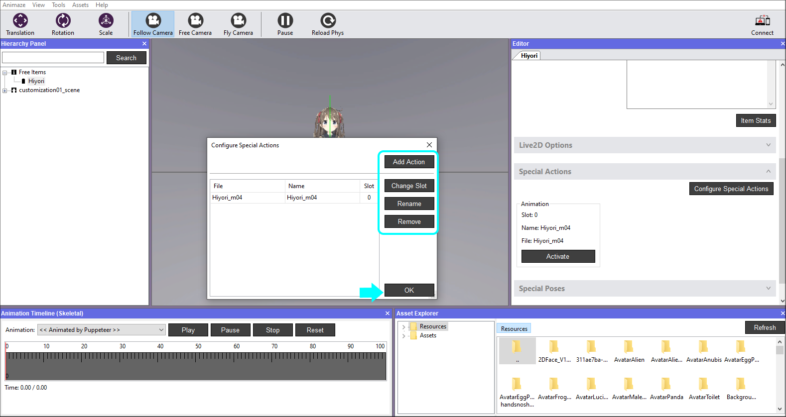
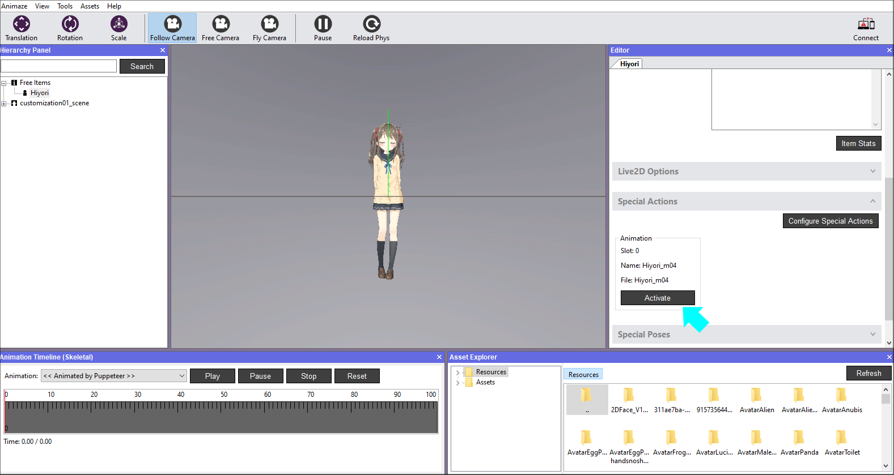

アバターの特殊アクションとポーズを設定する方法
特殊アクションとポーズ は、ユーザーが実行させるアニメーションであり、顔のトラッキングのリターゲティングシステムの一部ではありません。例えば、特殊アクションはアバターに表示させたいかっこいいダンスの動きであり、特殊ポーズはアバターの機嫌（顔の色調を青く変えてアバターの表情を悲しげにするなど）です。
特殊アクションと特殊ポーズの可能性は無限大ですが、すべての特殊アクションと特殊ポーズは、特定の要件と動作に従う必要があります。
-
アバターに待機ポーズがある場合、特殊アクションはアイドルポーズで終了する必要があります。そうでない場合、アバターは特殊アクションの最後のフレームの状態のままになります
-
特別なポーズのアニメーション入力はトラッキング・リターゲティングで上書きされます
すなわち、特殊ポーズがParamEyeLOpenの入力を0（目を閉じる）に変更する場合、そのパラメータが顔のトラッキングによって上書きされます。Animazeのトラッキング・システムでマッピングされていないシステムを使用することを推奨します。
Animazeエディターのシステムは、デフォルトで、インポート時にすべての特殊アクションとポーズの検出とインポートを試みます。特殊アクションの形式は*.motion3で、特殊ポーズの形式は*.exp3.jsonでCubism Editorからエクスポートされます。これらは、Animazeエディター内で追加、再調整、削除することができます。
特殊アクションを設定する手順：
-
Animazeエディターを開きます
-
エディターパネルで「特殊アクション」バーをクリックし、展開させます

-
「特殊アクションを設定」ボタンをクリックすると、設定ウィンドウが開きます

-
エディターに、インポート時に検出されたアニメーションがリスト化されます

-
ここでは、特殊アクションを追加、削除、最調整することができます。終了したら、OKをクリックします。

-
「実行」ボタンをクリックして、アニメーションを実行させ、実行されるアクションを確認します
特殊ポーズの設定でも同じ手順に従ってください。システムが、アバターの「expressions/」フォルダーで*.exp3.jsonファイルを探します . 作業を終えたら、階層パネルでアバターを保存します


素晴らしい！これで特殊アクションを設定できました